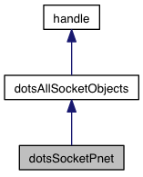

Overview
Implement socket behavior using the pnet mex function.
pnet is from the "tcp/udp/ip-toolbox" by Peter Rydester, Sweden, and released under the GNU General Public License.
Inheritance diagram for dotsSocketPnet:

Methods | |
| id | open (self, localIP, localPort, remoteIP, remotePort) |
| See http://www.rydesater.com or search for "tcp/udp/ip-toolbox" on the Matlab Central File Exchange. More... | |
| status | close (self, id) |
| Close the given pnet socket. | |
| status | closeAll (self) |
| Close all pnet sockets. | |
| hasData | check (self, id, timeoutSecs) |
| Attempt to read from the given pnet socket without consuming available data. More... | |
| data | readBytes (self, id) |
| Read any avalable data from the given pnet socket. | |
| status | writeBytes (self, id, data) |
| Write data to the given pnet socket. | |
Additional Inherited Members | |
 Properties and Events inherited from dotsAllSocketObjects Properties and Events inherited from dotsAllSocketObjects | |
| null | id = open(self, localIP, localPort, remoteIP, remotePort) |
| Open a new socket and return an identifier for it. More... | |
| null | status = close(self, id) |
| Close an open socket. More... | |
| null | hasData = check(self, id, timeoutSecs) |
| Check whether a socket has a packet to read. More... | |
| null | data = readBytes(self, id) |
| Read byte data from a socket. More... | |
Methods
◆ open()
| id open | ( | self | , |
| localIP | , | ||
| localPort | , | ||
| remoteIP | , | ||
| remotePort | |||
| ) |
See http://www.rydesater.com or search for "tcp/udp/ip-toolbox" on the Matlab Central File Exchange.
Open a pnet "udpsocket", "udpconnect" it, and make it non-blocking.
◆ check()
Attempt to read from the given pnet socket without consuming available data.
The documentation for this class was generated from the following file:
- dotsSocketPnet.m